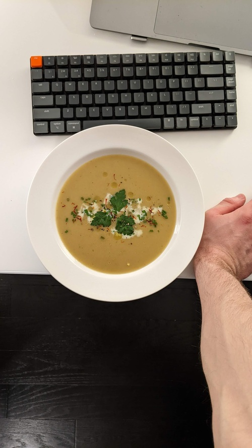

Leek Soup

Serves
: 5
Prep time
: 1hr
Author
: Matthieu Court
Ingredients
1 - Onion
250g - Potatoes (peeled)
250g - Leek
2 Tsp - Ground Cumin
A few - Saffron Threads
1L - Water
Some - Butter
Back to Home